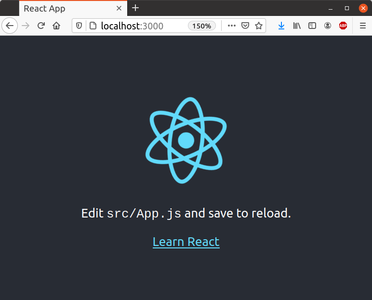
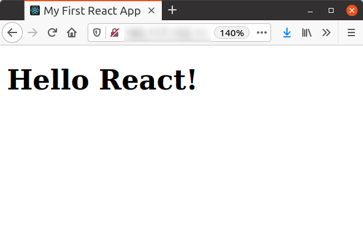
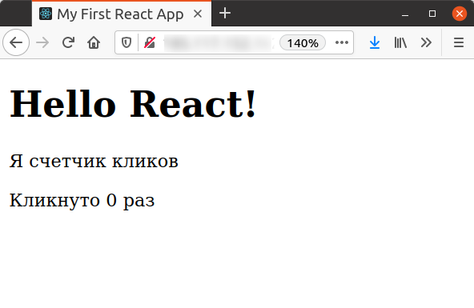
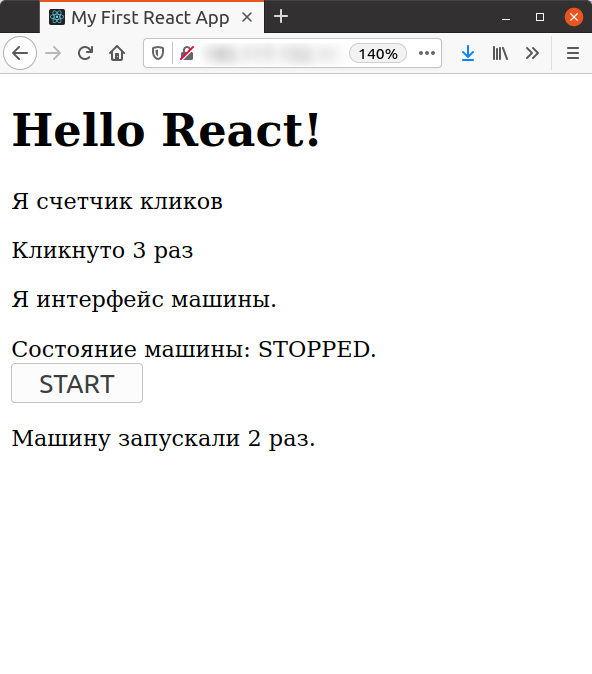
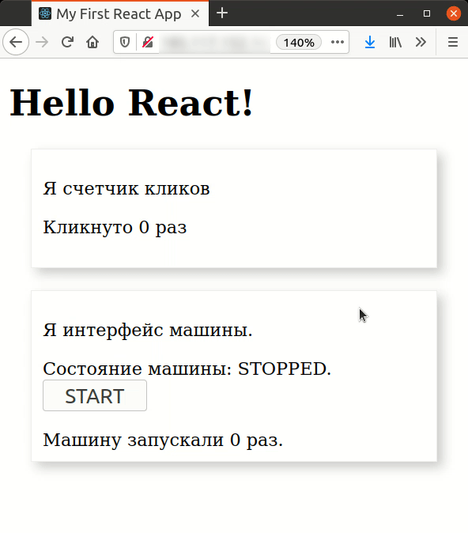
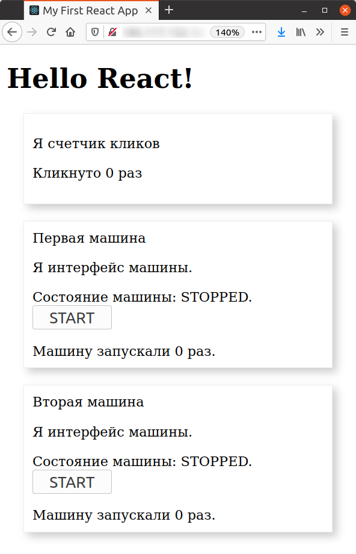

Здесь все максимально просто, как это часто бывает с созданием хелловорлдов. Все (почти) сделают за нас.
Перед тем как начать убеждаемся в том, что у нас есть необходимый инструментарий.
node --version
v10.24.0
npm --version
6.14.11
npx --version
10.2.2
Собственно создание приложения выполняется простой командой
npx create-react-app hw-app
где hw-app (helloworld-application) -- имя приложения.
В текущей папке будет создана папка с именем hw-app, содержащая все необходимое для запуска React приложения. Чтобы проверить его работу нужно зайти внутрь (cd hw-app) и запустить приложение.
npm start
Результатом работы команды будет являться не только текст на экране
Compiled successfully!
You can now view hw-app in the browser.
http://localhost:3000
Note that the development build is not optimized.
To create a production build, use npm run build.
но и возможность проверить его правдивость.
Нацелим свой браузер на указанный адрес и увидим работающее приложение.

Что бы остановить приложение (если захотим) нажмем Ctr-C.
Посмотрим на содержимое папки приложения-проекта.
ls
README.md node_modules package-lock.json package.json public src
ls public
favicon.ico index.html logo192.png logo512.png manifest.json robots.txt
ls src
App.css App.js App.test.js index.css index.js logo.svg reportWebVitals.js setupTests.js
В папке public лежит index.html, который и будет отдаваться dev-сервером в ответ на запрос браузера.
В свою очередь в index.html есть div элемент с id='root', в который React "отрисует" приложение, как это указано в файле src/index.js
ReactDOM.render(и отрисует он там компонент
<React.StrictMode>
<App />
</React.StrictMode>,
document.getElementById('root')
);
App.
Чтобы рассмотреть немного ближе, как это работает изменим файлы index.html и App.js.
Пусть браузeр в заголовке показывает название именно нашего приложения. Изменим соответствующую строку
было
<title>React App</title>стало
<title>My First React App</title>А компонент App пусть покажет наш контент (содержимое файла
App.js) было:
import logo from './logo.svg';стало:
import './App.css';
function App() {
return (
<div className="App">
<header className="App-header">
<img src={logo} className="App-logo" alt="logo" />
<p>
Edit <code>src/App.js</code> and save to reload.
</p>
<a
className="App-link"
href="https://reactjs.org"
target="_blank"
rel="noopener noreferrer"
>
Learn React
</a>
</header>
</div>
);
}
function App() {также из папки src можно удалить все неиспользуемые файлы в данный момент файлы. Содержимое папки должно быть таким
return (
<div>
<h1>Hello React!</h1>
</div>
);
}
export default App;
ls src/
App.js index.js
По необходимости мы будем добавлять нужные файлы сами и узнаем зачем мы это делаем. А пока посмотрим на результат.

Выглядит как настоящий HelloWorld, но останавливаться мы на этом не будем и рассмотрим простые случаи взаимодействия с пользователем, чтобы наш "Hello" не улетел в пустоту.
В React мы работаем с компонентами. В данном и самом простом случае компонент - это функция написанная на JavaScript и возвращающая код, похожий на разметку html. Похожий, но являющийся на деле кодом JSX из которого html получается в результате компиляции.
Мы не будем вносить изменения в файл App.js пусть он остается корневым компонентом нашего в будущем интерактивного приложения, в котором мы расположим написанные нами компоненты.
Не забудем убрать лишние строки из src/index.js, он примет вид
import React from 'react';
import ReactDOM from 'react-dom';
import App from './App';
ReactDOM.render(
<React.StrictMode>
<App />
</React.StrictMode>,
document.getElementById('root')
);
Следует сказать, что компоненты могут быть функциональными -- просто функция, возвращающая представление компонента и "классовыми" -- это компонент описываемый JS классом, имеющий внутреннее состояние и дополнительный функционал.
Сказанное не означает, что функциональные компоненты не могут иметь внутреннего состояния, но об этом позже.
Добавим в наше приложение два компонента, один функциональный и один в виде класса. Оба будут иметь состояния, что-то о себе помнить и взаимодействовать с пользователем.
Первый компонент, назовем его ClickCounter, будет считать сколько раз по нему кликнули.
Второй - Machine будет представлять собой интерфейс с какой-то машине, которую можно включать выключать, нажамая на кнопку.
Первая итерация. Это содержимое файла ClickCounter.js
const clickCounter = () => {
const clickTimes = 0;
return (
<div>
<p>Я счетчик кликов</p>
<p>Кликнуто {clickTimes} раз</p>
</div>
);
}
export default clickCounter;
А вот так изменился App.js.
import ClickCounter from './ClickCounter';
function App() {
return (
<div>
<h1>Hello React!</h1>
<ClickCounter />
</div>
);
}
export default App;
В первой строке импортируем наш ClickCounter и добавляем его в отрисовку после тега "Hello React!". И да, новый компонет будет выглядеть в коде как еще один новый тэг. Тут наверное может возникнуть вопрос об именовании компонентов, в файле ClickCounter.js экспортируем clickCounter, в App.js импортируем ClickCounter, что за дела?
Мы можем импортировать хоть MySupperPupperClickCounter из './ClickCounter' и использовать его как <MySupperPupperClickCounter /> , но получим все равно вывод функции clickCounter(), которая экспортируется по дефолту. (попробуйте)
Итого: после слова import стоит имя компонента которое мы будем использовать далее в файле (в данном случае в файле App.js) после слова from стоит имя файла с относительным путем, но без расширения '.js'.
Что же написано в СlickCounter.js? Определена константа с имененем clickCounter, которой присваивается '=' функция без параметров '()' выполняющая код написанный в теле '{}', там же определяется переменная clickTimes. Значение этой переменной будет появляться в строке
<p>Кликнуто {clickTimes} раз</p>где имя переменной обернуто в фигурные скобки. Помним, что это
JSX и после компиляции мы увидим "Кликнуто 0 раз" как на рисунке.

Пока еще ничего инресного не происходит, т.к. не самого подсчета кликов. Раелизуем его.
https://ru.reactjs.org/docs/hooks-state.html -- здесь очень подробно и хорошо описана работа с хуками состояния.
Я может быть немного повторю, но еще раз про строку
const [clickTimes, clickIncrement] = useState(0)
useState(0) -- принимает в качестве параметра инициирующее значение для переменной состояния clickTimes его же и возвращает как первый элемнт массива.
clickUpdater -- функция, которая будет обновлять значение переменной состояния своим параметром.
Я вынес логику в функцию clickIncrementeri(), чтобы показать, что сложную логику (в нашем случае она, конечно, простая) можно описать в отдельной функции и вернуть состояние оттуда.
Таким образом файл ClickCounter.js становится таким:
import React, { useState } from 'react';
const ClickCounter = () => {
const [clickTimes, clickUpdater] = useState(0);
const clickIncrementer = () => {
return clickTimes + 1;
}
return (
<div onClick={ () => clickUpdater(clickIncrementer)}>
<p>Я счетчик кликов</p>
<p>Кликнуто {clickTimes} раз</p>
</div>
);
}
export default ClickCounter;
Обратите внимание, ClickCounter мы теперь пишем с большой буквы -- это требование к именованию функциональных компонентов, использующих хуки.Теперь, кликая по тексту элемента будем наблюдать возрастающее число кликов.
Поехали дальше. На очереди компонент класс.
Назовем этот класс Machine и опишем в файле Machine.js.
Класс компонента обязан реализовать функцию render(), которая будет вызываться для отображения компонента в браузере. Сначала просто нарисуем нужные нам элементы с нужными значениями. Вот полный текст файла.
import React from 'react';Как видим,
class Machine extends React.Component {
state = {
machineState: 'STOPPED',
machineStarted: 0
}
render () {
return (
<div>
<p>Я интерфейс машины.</p>
<p>Состояние машины: {this.state.machineState}.
<br/>
<button onClick={this.clickButtonHandler}>{this.state.buttonLabel}</button>
</p>
Машину запускали {this.state.machineStartCount} раз.
</div>
);
}
}
export default Machine;
render() возвращает не что иное, как JS код, и весь этот код должен быть обрамлен одним <div>, для функционального компонента требование то же.
В файл App.js добавим строку для импорта
import Machine from './Machine';
и строку для отображения
<Machine />
Полный текст файла
import ClickCounter from './ClickCounter';
import Machine from './Machine';
function App() {
return (
<div>
<h1>Hello React!</h1>
<ClickCounter />
<Machine />
</div>
);
}
export default App;
Что увидим в браузере показано на рисунке. Пока, конечно -- каша. Но совсем скоро мы ее поправим (намаслим?).

А пока обсудим содержимое файла Machine.js. В первой строке import React. Обратите внимание, мы не использовали никаких выражений в фигурных скобках. Именно поэтому мы пишем extends React.Component. Если бы написали import React, { Component } from 'react' , то можно было бы сказать extends Component.
Далее, появилось объявление и инциализация объекта state. Именнно в нем будет храниться изменяемая информация (состояние), связання с объектом класса.
Обращаться к этому объекту нужно с использованием указателя this. Понятное дело, что объект state может быть объемнее и сложнее, чем в нашем случае.
Теперь у нас есть привязанное к компоненту состояние, которое нужно менять в зависимости от действия пользователя. Дествий не много -- нажатие кнопки. В зависимости от того, в каком состоянии находилась машина в момент нажатия кнопки мы изменим состояние таким образом:
Состояние машины -- STOPPED, на кнопке написано START.
Состояние машины -- STARTED, на кнопке написано STOP.
Счетчик стартов будет считать количество нажатий на кнопку с надписью START.
При работе с состоянием state надо знать, изменять состояние нужно только специальной фнукцией setState(), при этом фактически будет созано и сохранено новое состояние с новыми значениями. Попробуем на практике, при нажатии на кнопку поменяем соответствующие надписи. Для этого напишем функцию clickButtonHandler.
clickButtonHandler = () => {
switch (this.state.machineState) {
case 'STOPPED':
const cnt = this.state.machineStartCount;
this.setState({machineState: 'STARTED',
buttonLabel: 'STOP',
machineStartCount: cnt + 1});
break;
case 'STARTED':
this.setState({machineState: 'STOPPED',
buttonLabel: 'START'});
break;
default:
break;
}
}
Код простой и пояснений не требует, кроме наверное одного нюанса (я на этом застрял). Речь идет о наличии константы const cnt = this.state.machineStartCount. Почему бы не написать просто machineStartCount: this.state.machineStartCount + 1? Нельзя. Нельзя использовать непостредственно состояние компонента для создания нового состояния. Просто.
Также нужно обратить внимание, что в одном случае мы создаем полностью новое состояние, а вдругом, только только его части, не обновляем значение счетчика. setState() правильно обработает ситуацию, она обновит указанные поля и оставит не тронутыми те, о которых умолчали.
<button onClick={this.clickButtonHandler}>{this.state.buttonLabel}</button>Все работает, но выглядит все еще так себе.
Громко сказано, просто отделим компоненты друг от друга и покажем их границы. Все описание запишем в файл src/App.css и импортируем его в src/App.js строкой
import './App.css';
А это содержимое файла App.css :
.Component {
margin: 20px;
border: 1px solid #eee;
box-shadow: 5px 5px 10px #ccc;
padding: 10px;
}
Чтобы применить стиль к компоненту надо в тэге div добавить className вот так:
<div className='Component'>
Посмотрим, что получилось.

Не могу понять, почему не использовать 'свойства' или 'параметры', ведь очень похоже на передачу параметров при создании компонента. Может быть, при создании нового сообщества React-истов(еров) потребовался новый слэнг? В общем, следуем офциальному сайту.
Мы рассмотрели state - структуру, которая хранит информацию о компоненте и которую мы можем изменять
в жизненном цикле компоненташ, изменения инициируются компонентом. Теперь мы рассмотрим props.
Это данные, которые родитель компонента может передать дочернему компоненту.
"Пропсы" (вроде как устоявшийся термин) не изменяются в течение срока жизни компонента самим компонентом, для него это "константы", но которые компонент может прочитать. Поcмотрим как это работает.
Представим себе, что нам нужно создать две машины, два компонента Machine, которые будут отличаться именем-обозначением, в остальном экземпляры компонента будут одинаковы. Добавим дополнительную информацию с использованием props.
Создадим в App две машины с именами "Первая машина" и "Вторая машина" следующим образом
<Machine name='Первая машина' />
<Machine name='Вторая машина' />
name и будет тем самым пропсом.
Теперь изменим функцию render() компонента.
render () {Обратим внимание на строку после
return (
<div className='Component'>
{this.props.name}
<p>Я интерфейс машины.</p>
<p>Состояние машины: {this.state.machineState}.
<br/>
<button onClick={this.clickButtonHandler}>{this.state.buttonLabel}</button>
</p>
Машину запускали {this.state.machineStartCount} раз.
</div>
);
}
div. Теперь мы имеем на странице два независимых однотипных компонента с разными состояниями. Смотрим на рисунок.

Это самый простой случай использования пропса. В игре "Сапер" рассмотрим еще. Промежуточный итог таков:
state и propsНа очереди -- создание игры "Сапер". Рассмотрим создание более сложных компонетов, посмотрим как можно устроить взаимодействие между компонентами. Для реализации логики игры сначала поработаем с состояниями компонентов, во второй итерации посмотрим как хранить состояние всего приложения и работать с ним с использованием redux. Приступим.
Все знают игру "Сапер", нужно на поле размера M x N найти X мин. Сделаем такую.
Интерфейс игры показан на рисунке.

Здесь есть два "больших" компонента:
ControlPanelMineFieldОговорим правила, может быть еще раз.
m-строк, n-колонокGame Про этот компоннент я не упоминал, но он является главным, родительским компонентом для минного поля и панели отображения. Что входит в функции данного компонента:
state = {Здесь:
flagCnt: 0,
seconds: 0
};
flagCnt -- счетчик флажков на минном поле, seconds -- прошло секунд с начала игры.
Но ведь счетчик флажков и прошедших секунд отображается на кмпоненте ControlPnael , как же происходит передача данных? Посмотрим.
ControlPnael Game создает ControlPanel
<ControlPanelА вот так будет выглядеть код компонента
flagCnt={this.state.flagCnt}
seconds={this.state.seconds}
/>
ControlPanel.
Он совсем короткий и я привожу его весь.
const zeroPad = (num, places) => String(num).padStart(places, '0');Функциональный компонент создается с параметром
const controlPanel = (props) => {
const min = Math.floor(props.seconds / 60);
const secs = props.seconds % 60;
return (
<div className='Control'
style={{color: '#adadad'}}
>
Flag count:{zeroPad(props.flagCnt)} Time:{zeroPad(min, 2)}:{zeroPad(secs, 2)}
</div>
);
}
export default controlPanel;
props, Game в пропсах указывет имена переменных (своих переменных) this.state.flagCnt и this.state.seconds, а ControlPanel использует при рендеринге имена пропсов flagCnt и seconds. Просто?
Сам компонент не изменяет значания пропсов, за него это делает родительский компонент, причем делает это с использованием setState() (помним, что эта функция используется для изменения state компонента). А так как setState инициирует перересовку самого компонента и его дочек, то мы увидим изменяющиеся значения на ControlPanel.
Как данные спускаются от родительского компонента в дочерний мы увидели, теперь посмотрим как данные "поднимаются" от дочернего компонента к родительскому. Такой фокус происходит при взаимодействии Game и MineField .
Game <--> MineField MineField импользуется следующий код в Game :
<MineFieldИмена пропсов, наверное, говорящие:
rows='8'
cols='8'
mines='10'
gameStarted={this.startGame}
gameOver={this.stopGame}
changeFlagCount={this.setFlag}
/>
rows -- колчество строк ячеек, cols -- количество колонок, mines -- количество мин, с этими значения MineField построит минное поле. Теперь о передаче данных "наверх". Как Game узнАет о том, что игра началась, что был уже клик по ячейке? Просто, MineField вызовет в своем коде функцию gameSarted -- это имя пропса, но выполнится код функции startGame в пространстве класса Game -- это его функция.
Это приведет по цепочке к ежесекундному запуску функции tick(), изменяющей значение seconds, до тех пор пока MineField не вызовет функцию gameOver(true|false), при этом вызовется функция stopGame в классе Game. Game покажет alert с сообщением о выигрыше или проигрыше в зависимости от переданного (поднятого?)из MineField параметра. Вот часть кода Game (собственно, почти весь код):
start = () => {
this.timerID = setInterval(() => this.tick(), 1000);
}
stop = () => {
clearInterval(this.timerID)
}
tick() {
const oldsec = this.state.seconds;
this.setState({seconds: oldsec + 1});
}
startGame = () => {
this.start();
}
stopGame = (isGameWon) => {
if (isGameWon) {
alert("You win");
} else {
alert("You lose");
}
this.stop();
}
Функционал ячеек прост и описывается он в классе с оригинальным названием Cell. Первое и основное, что должна сделать ячейка -- это отрисовать себя в соответствии со своим состоянием: закрыта, открыта, помечена флагом. Тут нужно добавить, что состояние чейки не явлется хранимым в ячейке состоянием, а опять же передается ей через пропс от MineField.
render () {
const cellSize = 40; //px
var width = cellSize + 'px';
var height = cellSize + 'px';
var left = this.props.col * (cellSize + 4) + 'px';
var top = this.props.row * (cellSize + 4) + 'px';
let backgroundColor = this.props.opened ? '#adadad' : '#501b1d';
var rendstate = () => {
if (this.props.checked) {
return (
<img className='flag' src={flag} alt=''/>
)
}
if (this.props.opened) {
return (
this.props.hasBomb ? <img className='bomb' src={bomb} alt=''/> : (this.props.bombNbr > 0 ? this.props.bombNbr : ''));
}
}
return (
<div className='Cell'
style={{width, height, left, top, backgroundColor}}
onClick={this.leftClickHandler}
onContextMenu={this.rightClickHandler}
>
{rendstate()}
</div>
);
}
Да, в этой функции много "магических" чисел (40, 4, 4), наверное код можно было бы сделать чище. Но по именам переменных наверное все понятно:
cellSize -- длина стороны ячейки, чтобы хоть как-то уменьшить количество безымянных чисел.
width, height -- высота ширина
top, left -- координаты верхнего левого угла ячеки на поле, вычисляются в зависимости от номера строки и колонки, передаваемых от MineField в пропсах.
bomb, flag -- импортированные из файлов рисунки.
Итого, чтобы ячейка себя правильно отрисовала MineField передает ей следующие пропсы:
col -- колонка
row -- строка
checked -- помечена флагом
opened -- открыта
bombNbr -- сколько мин (бомб) в соседних ячейках
И конечно, нужно реагировать на нажатия левой и правой кнопки мыши. За это отвечают следующие две функции, обратите внимание, они указаны в тэге div :
leftClickHandler = () => {Как видите, вся работа этих функций заключается только в том, чтобы передать "наверх" координаты ячейки, про которой кликнули. После клика, вызываются переданные в пропсах функции, работа которых произойдет в классе
this.props.clickLeft(this.props.row, this.props.col);
}
rightClickHandler = (e) => {
e.preventDefault();
this.props.clickRight(this.props.row, this.props.col);
}
MineField и после обработки результат спустится вниз, назад в ячейку в виде измененного пропса opened или checked .
Это самый "функционально насыщенный и сложный" класс, весь код составляет немногим более 200 строк. Класс имеет конструктор, в котором создается массив размера rows x cols содержащий элементы типа cellData . Вот описание cellData .
class cellData {
constructor (row, col) {
this.row = row;
this.col = col;
this.hasBomb = false;
this.checked = false;
this.opened = false;
this.bombNbr = 0;
this.nbrs = [...Array(0)];
}
}
Эти данные полностью описываю состояние ячейки минного поля и именно они передаются в качестве пропсов при создании ячейки. Я про них уже писал.
constructor(props) {В поле состояния
super(props);
this.closedCells = props.rows * props.cols - props.mines;
this.flagCount = 0;
this.state = {
field: this.createMap(this.props.rows, this.props.cols, this.props.mines),
gameState: 'waiting',
}
}
state.field мы сохраняем карту минного поля, создаваемого функцией createMap(this.props.rows, this.props.cols, this.props.mines) . Если посмотреть на код (сслыка на полный код игры в конце статьи) создания минного поля, то можно увидеть может быть не совсем оптимальное наполнение поля минами и расчет соседей с минами и заполнение списка соседей, в общем, несколько проходов по одному и тому же массиву, но читается легко (наверное).
Что же, вот и код отрисовки компонента MineField и создания при этом компонетов ячеек с нужными пропсами, считаем при этом что все данные для ячеек лежат в соответствующем массиве:
render() {В конструкции
return (
<div className='MineField'>
{
this.state.field.map(function(row){
return row.map(function (cell) {
return (
<Cell
row={cell.row}
col={cell.col}
hasBomb={cell.hasBomb}
bombNbr={cell.bombNbr}
key={cell.row + "-" + cell.col}
checked={cell.checked}
opened={cell.opened}
clickLeft={this.cellLeftClicked}
clickRight={this.cellRightClicked}
/>
)
}, this);
}, this)
}
</div>
);
}
map не забываем передать указатель на класс, иначе будут недоступны функции класса. Все, игровое поле создано и готово принимать клики мышкой.
При клике на ячейку, как мы помним, в конечном итоге вызывается функция из класса MineField , производит манипуляции с минным полем, тем самым массивом, потом обновляем состояние (setState()) , и наблюдаем изменение внешнего вида ячеек, пропсы ведь поменялись, а так же смотрим на запуск счетчика секунд и флажков. Вот не очень сложный код функций обработки кликов
cellLeftClicked = (row, col) => {Как видно, игра перемещается из состояния в состояние
switch (this.state.gameState) {
case 'waiting':
this.props.gameStarted();
this.setState({gameState: 'started'});
/* falls through */
case 'started':
let newField = [...this.state.field];
this.openCell(newField, row, col);
this.setState({field: newField});
break;
case 'finished':
break;
default:
break;
}
}
cellRightClicked = (row, col) => {
switch (this.state.gameState) {
case 'waiting':
break;
case 'started':
if (this.state.field[row][col].opened) {
break;
}
let newField = [...this.state.field];
let flagCntDiff = newField[row][col].checked ? -1 : 1;
if ((this.flagCount + flagCntDiff) < 0 || (this.flagCount + flagCntDiff) > this.props.mines) {
break;
}
this.flagCount += flagCntDiff;
this.props.changeFlagCount(flagCntDiff);
newField[row][col].checked = !newField[row][col].checked;
this.setState({field: newField});
break;
case 'finished':
break;
default:
break;
}
}
waiting -> started -> finished . waiting -- это состояние сразу после загрузки страницы. В состояние started мы перемещаемся после открытия первой ячейки, и в состояние finished после открытия ячейки с миной или открытия всех свободных ячеек. За открытие ячеек отвечает фунцкия openCell() , она рекурсивно вызывает себя для открытия соседних ячеек, которые не граничат заминированными ячейками. В состоянии finished мы перестаем реагировать на действия пользователя, игру (страницу) нужно перезагрузить.
Еще раз хотелось бы обратить внимание на то, как происходит работа с минным полем -- state.field . В обработчике клика мышкой мы сосздаем копию поля.
Производим с ним необоходимые манипуляции и потом, с помощью setState() устанавливаем новое состояние с новым, обновленным полем.
Полный код приложения можно найти по ссылке (ее пока нет).
В этой статье я хотел показать способы взаимодействия, обмена данными между компонентами в приложении React, надеюсь получилось. Хотя могло получиться и так, что какие-то вещи уже очевидные для себя сейчас не рассказал. Я также писал здесь в тексте, что расскажу на примере этой же игры про применение redux , но наверное она (игра) того не стоит. Если статья вызовет интерес, сделаем какую нибудь инфографику с биржи, поучимся вместе использовать графические библиотеки и вот тут дойдет время для redux , будет к месту, наверное. А теперь, всем всего хорошего!